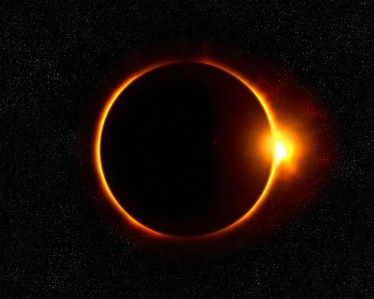

This April, my family and I traveled to southeastern Oklahoma in hopes of viewing a total solar eclipse. Such remarkable events are not common - in fact, the next total solar eclipse will not pass over the United States for 20 years! Here's a little bit about my experience.
The morning of the eclipse, clouds and scattered thunderstorms were predicted. Undaunted by this dismal forecast, we rose early the morning of the event and drove a couple hours to the center of the path of totality, in hopes of sunny skies and parted clouds.
For several hours, we waited for the eclipse to begin. Clouds rolled in, out and then in again. Things were not looking good as the partial eclipse began.
When totality arrived, however, the clouds parted and the skies darkened. Streetlights turned on and everyone began to cheer. We were able to see the earth's corona and even some corona mass ejections! It was truly an incredible experience that words alone cannot express.
 The diamong ring effect just moments before totality in Oklahoma.To whoever may have the opportunity of reading this, I strongly encourage you do all you can to witness an eclipse for yourself! If you've seen a partial eclipse, that's great, but the total experience is literally a million times better.